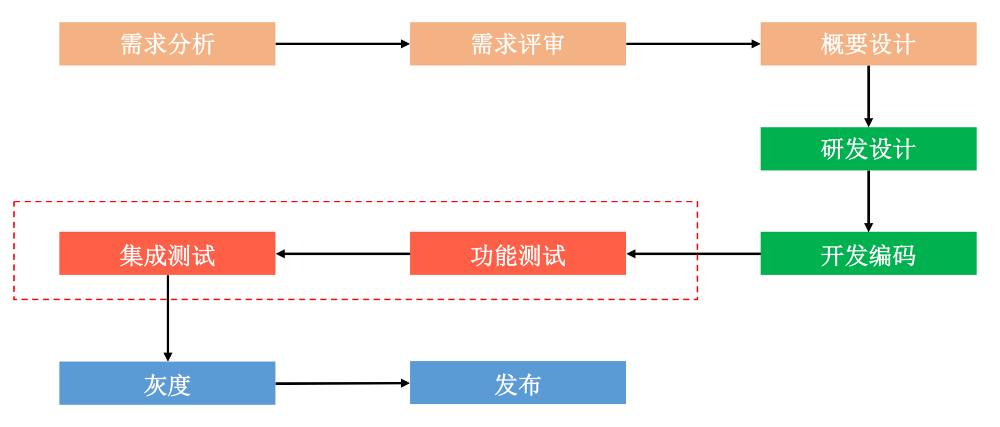
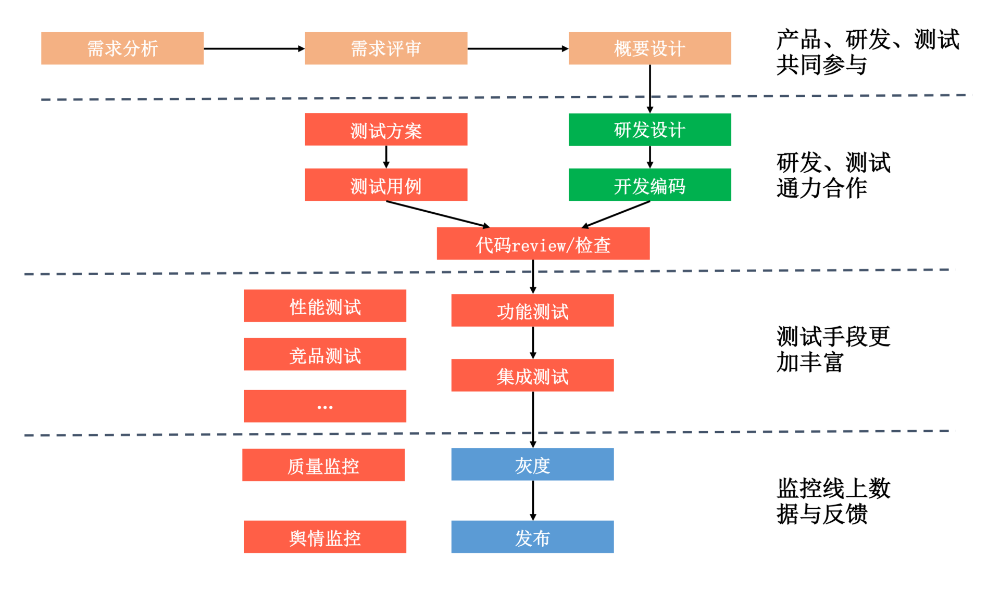
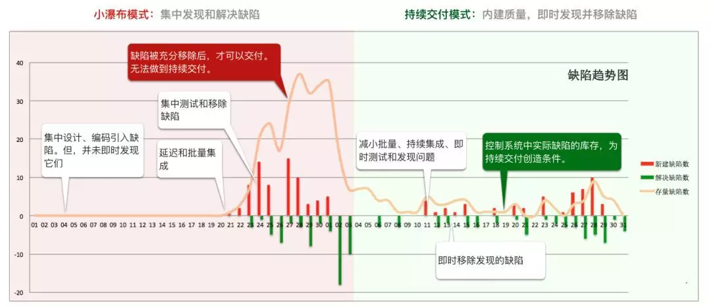
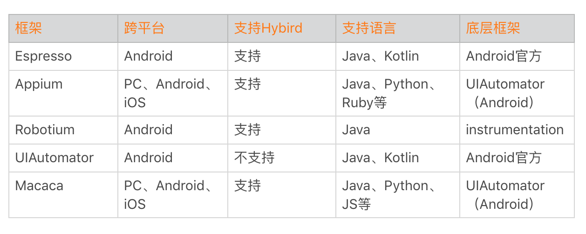
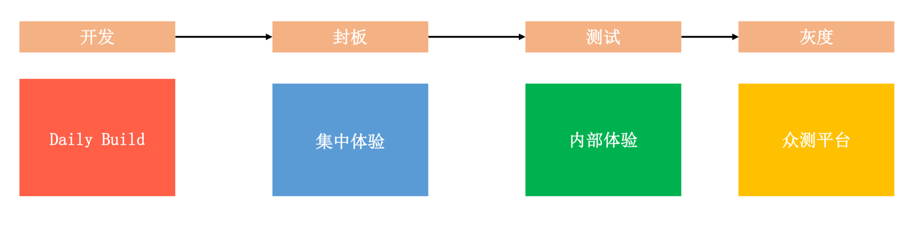
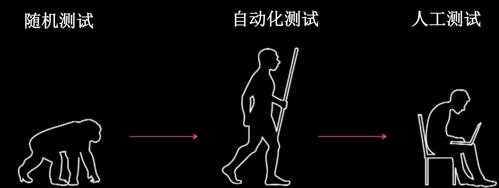
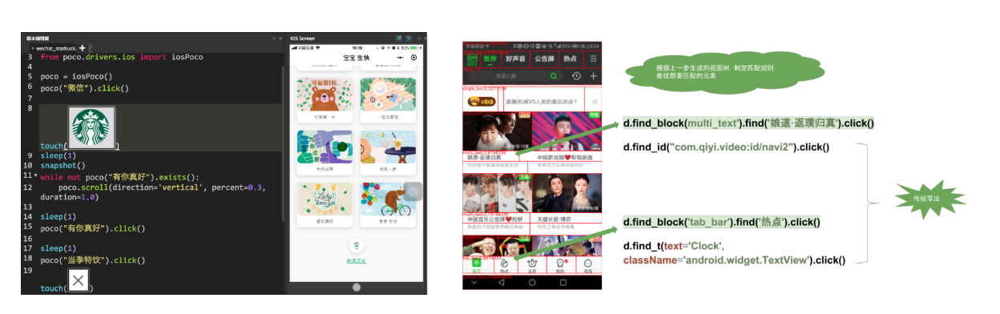
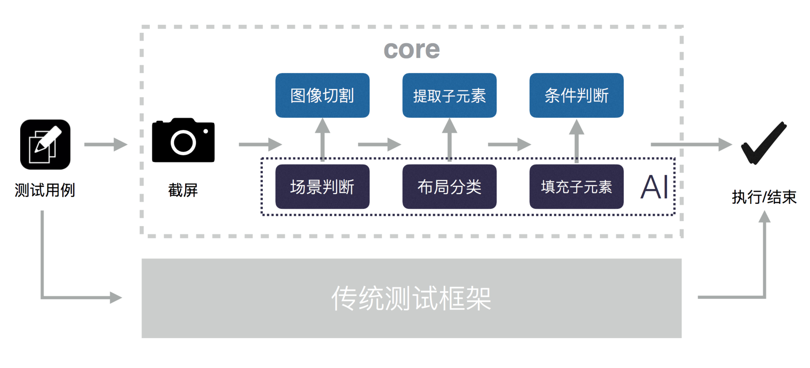
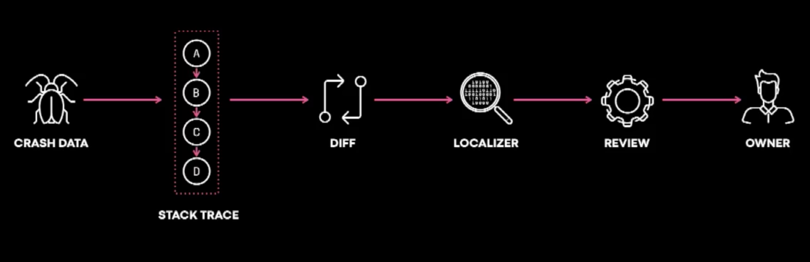
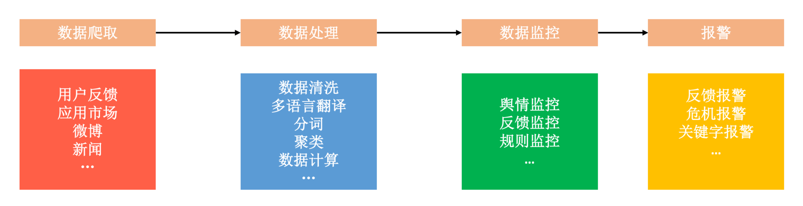

测试作为持续交付中重要的一个环节，它的使命是发现交付过程的质量问题。随着互联网迭代速度的加快，很多产品都是两周甚至每周一个版本，留给测试的时间越来越少。
那在这么短的时间，如何保障产品的质量，怎样高效地测试呢？我们研发模式在不断地变化，测试的定位又有哪些改变，而未来的测试又会发展成什么样的形态呢？
测试的演进历程
“专业的事情留给专业的人员”，社会各领域的分工越来越细，设计、研发、产品、测试大家各司其职，共同完成一个产品。但随着技术的发展，这样的分工并不是一成不变，从近两年大公司技术部门的组织调整来看，测试和开发的角色已经在不断融合。
互联网发展到今天，测试的职责发生了哪些改变？移动端测试又经历了怎么样的演进历程呢？
1. 测试的田园时代
在移动互联网起步之初，基本上还处在传统的软件研发阶段。产品将需求交给研发，研发实现后交给测试，测试把最终产品交付给用户。我们可以把这个阶段叫作测试的“田园时代“。

测试作为研发流程的一个环节，只是作为产品交付给用户前的一道屏障，承担着质量保证工作。在这个阶段测试有两个最重要的考核指标：每个版本发现的 Bug 数量和遗漏到线上的 Bug 数量。
在测试的“田园时代”，很多 Bug 可能会出现多次返工，产品的交付流程也很难快起来。这个阶段的主要问题有：
-
人员对立。测试的 KPI 是尽可能地发现开发人员的 Bug，他们之间非常容易发生对立。特别是出现线上事故的时候，开发埋怨测试没用，测试埋怨开发无能。
-
效率低下。虽然引入了 Monkey 这些基本的自动化工具，但是大多数的测试方法还是依赖人工执行。尽管我们不停地加大测试与研发人员的比例，但整个过程还是问题多多，很难缩短整个产品的交付周期。
2. 测试的效能时代
随着互联网竞争的加剧，交付速度成为了产品的核心能力。国内外的大公司开始适应趋势的变化，把测试团队的职责转变成为团队的效能服务。
测试不只是负责交付质量，还需要同时思考产品的质量和效率。正如我前面说到的“211”效能目标，也就是 2 周交付周期、1 周开发周期以及 1 小时发布时长，测试人员需要直接为这个目标负责，思考如何快速并且高质量完成产品的交付。
长兄于病视神，未有形而除之，故名不出于家。中兄治病，其在毫毛，故名不出于闾。若扁鹊者，镵血脉，投毒药，副肌肤，闲而名出闻于诸侯。
这是扁鹊讲三兄弟治病的故事，说的是长兄治病，是治于病情未发作之前，由于一般人不知道他事先能铲除病因，所以他的名气无法传出去。中兄治病，是治于病情初起之时，一般人以为他只能治轻微的小病，所以他的名气只在乡里。而扁鹊是治于病情严重之时，在经脉上穿针管来放血，在皮肤上敷药，所以都以为我的医术最高明，名气因此响遍天下。
从这个故事来看，扁鹊认为长兄的医术最高，可以做到“治病于未发”。回到我们今天所谈的测试，很多公司已经开始提出“测试左移”，也是希望测试在更早期的阶段介入到交付过程中，不仅是发现问题，要考虑更多的是如何避免问题的出现。

测试需要深入到产品从设计到发布的各个流程，要做到“比产品更懂技术，比研发更懂业务”。为了顺应这个变化，各大公司在组织架构上开始把大型的测试团队打散，揉碎进各个业务开发团队中。“产研测一体化”目的在于统一团队的目标和方向，让所有人为了提升产品效能这个共同目标而努力。这样团队中所有成员成为相亲相爱的一家人，也消除了“产研测”之间的对立现象。
但是在《如何衡量研发效能》一文中所提到的：“在产品迭代前期，团队集中设计、编码，引入缺陷，但并未即时地集成和验证。缺陷一直掩藏在系统中，直到项目后期，团队才开始集成和测试，缺陷集中爆发”。

虽然通过持续交付模式，可以一定程度上削减提交波峰，但是依然无法避免经常出现的“踩点”提交。在测试的效能时代，如何提升测试的效率依然是急需解决的问题。
在这个阶段，我给出的答案是持续集成的工具化和平台化。从需求发起到分支管理、Code Review、代码检查以及测试发布等，测试团队负责把控各式各样的工具或平台。
由于整个持续交付过程涉及各个阶段的平台工具，这里我只挑跟测试相关的两个平台重点来讲。
- 测试平台。竞品测试、弱网络测试、启动测试、UI 测试等，整个测试流程引入了大量的自动化工具。各大公司也改良或创造了不少好用的工具，例如腾讯的 New Monkey 工具，可以大大提升 Monkey 的智能度和覆盖率。除了我们比较熟悉的Espresso、UIAutomator、Appium以及Robotium自动化框架，像阿里的Macaca、Facebook 的Screenshot Tests for Android都是值得学习的开源测试框架。当然，也有一些公司把测试平台打包成服务对外公开，例如腾讯的WeTest、华为的开发者服务等。
下面是这些常用工具的简单对比，供你参考。

- 体验平台。在测试的效能时代，自动化并不能完全取代人工测试。在产品交付的不同阶段，我们需要提高团队内外人员的参与度。无论每日的 Daily Build、封版时的集中体验，还是测试期间的员工内部体验、灰度期间的外部众测平台，的目的是让尽量多的成员都参与到产品的体验中，提升团队成员对产品的认同感。当然各大公司也都有自己的体验平台，例如腾讯的 RDM、蚂蚁的伙伴 APP 等。

测试的效能时代也是目前大多数公司所处的阶段，据我了解很多公司的工程效能团队，也是从测试团队演进而来的。随着测试团队职能的转变以及技术深度的提升，会涌现出一大批资深的测试开发人员，也会有更多优秀的测试人员走向开发或者产品的岗位。
不过我发现关于测试国内外也有一些差异，例如国外十分推崇开发编写的 test case，但在国内却非常不容易推行。这主要是因为国内业务的迭代更加快速，开发需求都做不完，根本没有时间去写 test case，更不用说有的 test case 写起来可能比开发需求更费时间。
测试的智能时代
“人人都可以是测试”，虽然在稳定性、兼容性又或者是性能测试的一些场景上，我们做得非常不错，但是对于某些自动化测试场景，特别是 UI 测试，目前还达不到人工测试的水平。

就拿 UI 测试为例，由于版本迭代周期越来越短，而且 UI 变动又非常频繁，无论是开发还是业务测试人员，对写测试脚本和用例的积极性都不是很高。由于测试脚本的编写成本和维护成本比较高，可复用程度又比较低，所以 UI 测试往往费时费力，很多时候效率还不如人工测试。
那测试从效能时代走向下一阶段，在智能时代我们应该怎样去解决这些问题呢？
1. AI 在测试的应用
AI 技术在我们熟悉的围棋和星际争霸的人机大战中已经大放异彩了，那它在测试领域可以擦出哪些不一样的火花呢？
先看看我们在 UI 自动化测试中遇到的几个困境：
-
覆盖率。自动化测试可以覆盖多少场景，如何解决登录、网络异常等各种各样情况的干扰。
-
效率。我们是否可以提高写测试用例的效率，或者是降低它的编写成本，做到人人都可以写用例。
-
准确性。如何提高整个自动化测试过程的稳定性，对于测试流程和最终结果，是否还需要大量的人工干预分析。
网易开源的Airtest、爱奇艺的AIon，都尝试利用 AI 技术解决测试用例的编写效率和门槛问题。

这里主要用到图像识别以及 OCR 技术，以爱奇艺的 Alon 为例，它的整个处理流程是：
-
图片处理。首先是场景的识别，例如当前界面是否有弹出对话，是否是登陆页面等，然后通过对截屏进行图像分割。这里的难点在于文字的 OCR 识别以及布局的分类，例如怎么样把不同的切割图像进行分类，并且能够知道这块图像对应的内容。
-
结果判定。如何判定本次 UI 测试的结果是否是符合预期的，相似度达到多高的程度等。因为 UI 测试可能遇到的情况有很多，我们需要尽可能提升测试的准确性，减少人工干预的情况。

在 Alon 的参考文章中，还提到 UI2Code 这样一个应用场景，也就是把一个应用截图，或者把一个 UI 设计图，通过图像识别生成对应的代码。其实就是Pixel to App希望实现的效果，相信也是很多开发人员的梦想吧，让我们可以彻底从 UI 开发中解放出来，通过设计稿就可以直接生成最终的 UI 代码。
Airtest 和 Alon 解决的核心问题是 UI 自动化测试的效率，但是它们依然需要人工去编写测试用例。对于稳定性测试，虽然我上面提到过腾讯的 New Monkey，不过它依然存在很多缺陷：
-
覆盖场景。虽然是改进版本的 Monkey，但是它依然覆盖不了所有的用户场景，而且很多场景它的执行流程不同于真实的用户。
-
非智能。这里你可以理解为非人类，Monkey 的操作和人类的操作方式完全不同。
那有没有更智能的解决方案呢？Facebook 的Sapienz尝试希望像真实用户一样去使用我们开发的应用，它通过收集真实用户的操作路径来训练测试行为。而且在测试出崩溃后，Sapienz 会自动关联和定位代码，提升解决问题的效率。

虽然 AI 测试目前还无法完全取代人工测试，但随着技术的进一步成熟，相信它对测试领域的变革将会是革命性的。当然想要实现这个目标我们还有很多工作要做，这也意味着这其中还有很多技术创新的机会。
2. 大数据在测试的应用
现在越来越多的业务正在使用数据驱动的方式运作，测试的对象要从简单的代码转变为数据和算法。现在的业务越来越复杂，数据量越来越大，我们应该怎样及时发现产品的质量和业务问题呢？
国内的一些公司提出了基于大数据的“实时质量”体系，希望通过实时获取线上海量数据，完成业务数据校验和质量风险的感知。
这里的数据主要包括质量和业务两个方面。
-
质量。崩溃、启动速度、卡顿以及联网错误等质量问题，我们希望可以做到分钟级别的实时性，同时支持更加细粒度的维度分析。例如可以通过国家、城市、版本等维度来查看网络问题。
-
业务。对于产品的核心业务我们需要实现数据收集、分析与校验，打造数据监控和跟踪的能力。
对于基于大数据的“实时质量”测试体系，关键在于如何保证数据的实时性与准确性，这两点我会在“数据评估”的内容中与你详细讨论。
除了质量和业务数据，大公司做得比较多的还有用户反馈和舆情的跟踪和分析。各大公司基本都有自己的一套系统，通过爬取用户反馈、应用市场、微博、新闻资讯等各方面的消息来源，监控产品的舆情情况，你可以参考支付宝如何为移动端产品构建舆情分析体系。

总结
在 APM 系统搭建和持续交付优化过程，我接触了很多测试工程师，也关注了各大公司测试的现状。对于测试的职业道路发展，我个人的建议是：不管测试如何发展，测试效率如何提升，测试人员都要学会不断地变革，变革自己、变革整个研发流程。我们不能只守着自己的一亩三分田，需要尝试去做很多以前开发需要做的事情，比如性能、稳定性、安全等方面的工作。说得严重一点，如果你不能及时地更新自己的技术栈，不去往更深入的底层走，在测试的智能时代，首先淘汰的就是传统的功能测试人员。
在这个变革的时代，我身边也有很多独当一面的测试工程师通过平台化的机遇晋级为专家，也有一些优秀的测试转向了产品或研发，所以说还是要提高自身的能力，把机会握在自己手上。
“学如逆水行舟，不进则退”，对于开发人员同样如此。现在平台工具和框架越来越成熟，很多初学者拿着一大堆开源工具，也能写出炫酷的界面。如果我们不去进步，特别是在大环境不好的时候，也会很容易被淘汰。
今天我分享了一些我对高效测试的心得和体会，如果同学们里有测试领域的专家，非常欢迎你来谈谈对这个行业和发展的看法，分享一下你对高效测试的看法。
课后作业
你所在的公司，目前测试正在处于哪个阶段？对于测试，你还有哪些疑问？欢迎留言跟我和其他同学一起讨论。
今天的课后作业是，请你观看网易、爱奇艺以及 Facebook 关于 AI 在测试领域应用的分享，在留言中写下自己的心得体会。
COMMUNITY NOTES
读者评论
这篇文章暂时没有读者留言。